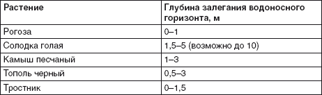
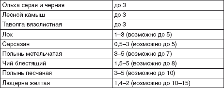

Как искать воду.

Самый надежный способ поиска воды на участке – привлечение специалистов соответствующего профиля, которые проводят необходимые изыскания и сообщают не только о наличии/отсутствии воды на участке, но и о ее качестве на каждом водоносном горизонте, а также о запасах воды на горизонтах (особенно актуально в том случае, если планируется использовать «верховодку» – к примеру, для сооружения колодца).
Но не всегда имеется возможность или желание обратиться к гидрогеологам для поиска воды на участке. Особенно если этот поиск проводится на стадии приобретения участка – жаль тратить деньги и время на еще чужую собственность, тем более что, если воды не обнаружится, деньги окажутся выброшенными на ветер. В этом случае имеет смысл вспомнить о старинных способах поиска воды, ведь гидрогеологи появились сравнительно недавно, а воду люди отыскивают уже тысячелетия.
В сельской местности для поиска воды часто используется лозоходство. Раньше лозоходцы отыскивали воду с помощью V-образной веточки вербы, калины или лещины. Теперь, вооруженные экстрасенсорной терминологией, чаще пользуются алюминиевой проволокой, которую вставляют в трубку из бузины. Лозоходец держит свой «поисковый инструмент» свободно, и веточка или проволочная рамка поворачиваются, указывая на водоносный слой. Научных объяснений подобному явлению нет, но лозоходцы обычно воду находят. В старину этот способ считался самым надежным для определения места, где следует копать колодец.
Гораздо более надежным индикатором наличия или отсутствия воды на участке являются растения. Они не требуют сомнительных манипуляций с рамкой или веточками, они просто или есть, или нет. Например, если на участке имеются растения, любящие влагу, и их листва имеет насыщенный, яркий зеленый цвет, то вода явно залегает где-то не слишком далеко от поверхности.
Верба с древних времен считалась на Руси индикатором наличия воды – это влаголюбивое растение. О наличии воды также свидетельствует дикорастущая смородина. Ольха серая и черная, лесной камыш, таволга вязолистная указывают, что глубина залегания воды не превышает 3 м – это влаголюбивые растения, и их корневая система не распространяется глубже 3 м. А солодка голая указывает, что глубина залегания воды – до 2 м от поверхности. О неглубоком залегании водоносного слоя свидетельствуют гусиная лапчатка, наперстянка, болиголов, мать-и-мачеха, конский щавель, осока, хвощ, крапива, камыш. Такие деревья, как ольха, клен, верба, плакучая ива, береза, имеют обыкновение наклоняться в сторону течения подземных вод, если водяной горизонт располагается поблизости от поверхности. А вот яблони, сливы, вишни не слишком любят высокие грунтовые воды – в перенасыщенной влагой почве эти деревья начинают болеть (табл. 1.3).
Таблица 1.3.
Растения- индикаторы и глубина залегания водоносного горизонта [3]


Хорошим индикатором наличия грунтовых вод является вечерний туман, стелющийся над землей, а также столбы мошек и комаров – эти влаголюбивые насекомые собираются в местах, где вода близко подходит к поверхности земли. А вот наличие на участке многочисленных муравейников рыжих муравьев означает, что «верховодка», скорее всего, залегает достаточно глубоко, а может, и вовсе отсутствует – рыжие муравьи предпочитают сухость и не селятся поблизости от воды.
Наши предки считали гарантией наличия воды на участке расположение его в долине, в окружении холмов. Считается также, что с большой долей вероятности вода есть на покатости косогора, если у подножия имеется источник.
Так что внимательный человек определит, есть поблизости от поверхности грунтовые воды или нет. Причем глубину их залегания можно определить, если поблизости от вашего участка имеются открытые водоемы или работающие колодцы. Если они расположены в отдалении, то помочь определить глубину залегания грунтовых вод может барометр-анероид. Расчет очень прост: цена деления барометра 0,1 мм соответствует разнице высот 1 м, и если на уровне земли соответствующего колодца прибор показал давление 745,8 мм, а в выбранной вами для колодца точке – 745,3 мм, то 0,5 мм разницы в показаниях прибора соответствуют 5 м разницы в глубинах колодцев – ваш придется рыть глубже [4].
Но, конечно, самый надежный метод – пригласить гидрогеолога для проведения изыскательских работ и осуществления разведывательного бурения. Особенно потому, что может оказаться – вода на участке есть, но качество ее таково, что использовать ее невозможно даже для полива огорода из-за высокой степени загрязненности. Но если вы решили заниматься поиском воды самостоятельно (либо попробовать себя в роли лозоходца, либо воспользоваться индикаторами в виде растений, комаров и т. д. или приборами вроде ватерпаса или барометра-анероида), то расспросите владельцев соседних участков о качестве воды – соответствует ли она требованиям, можно ли употреблять ее для бытовых нужд или только для хозяйственных, как осуществляется у соседей очистка воды, насколько она сложна и дорогостояща – ведь, скорее всего, вы будете «подключаться» к тому же подземному источнику, что и они.

Внимание
Лучшим временем для поиска воды на участке с давних времен считается август, так как запас «верховодки» во многом зависит от внешних факторов, а именно к концу августа «верховодка» опускается глубже всего и запасы ее минимальны. Так что если в августе «верховодка» есть, то вода на участке будет весь год. Если же заниматься поиском воды в «мокрые» месяцы, то можно обзавестись колодцем, который будет пересыхать как раз в то время, когда вода нужнее всего.